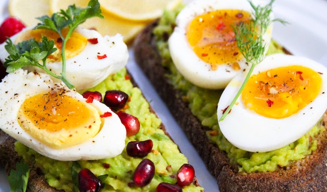

Œufs mimosa
L'œuf mimosa est un œuf dur farci dont le blanc est rempli de mayonnaise ou d'un mélange à base de mayonnaise puis saupoudré de jaune cuit écrasé en petits grains évoquant la fleur de mimosa et d'herbes vertes, couramment du persil. Ce plat typique de la cuisine francophone est tantôt symbole de la banalité du quotidien, tantôt raffiné.
L’origine de l’œuf mimosa remonte à la Rome antique où les œufs pelés et coupés en quatre étaient servis garnis de sauces. La recette de l’œuf farci avec son propre jaune mêlé à des condiments est originaire d’Andalousie et est attestée dès le XIIIè siècle. Dans la cuisine méditerranéenne, les herbes sont souvent remplacées par des anchois.

- Dans une grande casserole, faire bouillir une grande quantité d’eau avec un filet de vinaigre. Quand l’eau bout, plonger délicatement les œufs à l’aide d’une cuillère à soupe et compter 10 minutes de cuisson. Sortir aussitôt les œufs et les plonger dans un récipient d’eau très froide. Laisser refroidir.
- Pendant ce temps, laver le persil et le hacher finement. Préparer la mayonnaise.
- Après refroidissement, prendre un œuf, le cogner sur une surface dure pour fendiller sa coquille. L’œuf doit être ferme et sa coquille doit se retirer facilement. Répéter la même opération pour chaque œuf.
- Couper les œufs en deux dans leur longueur. Retirer délicatement leur jaune, en faisant attention de ne pas abimer les blancs. Écraser les jaunes au travers d’une passoire fine. Prélever un tiers du jaune ainsi écrasé et le mettre de côté.
- DAjouter la mayonnaise et le persil haché dans l’assiette, avec les deux tiers des jaunes écrasés. Saler et poivrer. Mélanger. Avec une petite cuillère, remplir le creux de chaque demi blanc d’œuf avec ce mélange.
- Déposer les œufs sur le plat de service garni d’un lit de salade, en cercle, comme les pétales d’une fleur. Saupoudrer chaque demi-œuf du reste de jaunes émiettés finement : c’est ce qui fait l’aspect mimosa.
- Mettre le plat au frais, au moins 20 minutes, avant de servir.